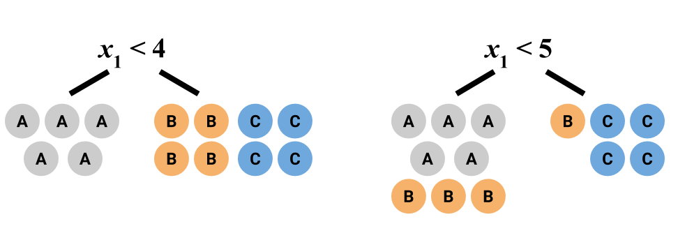
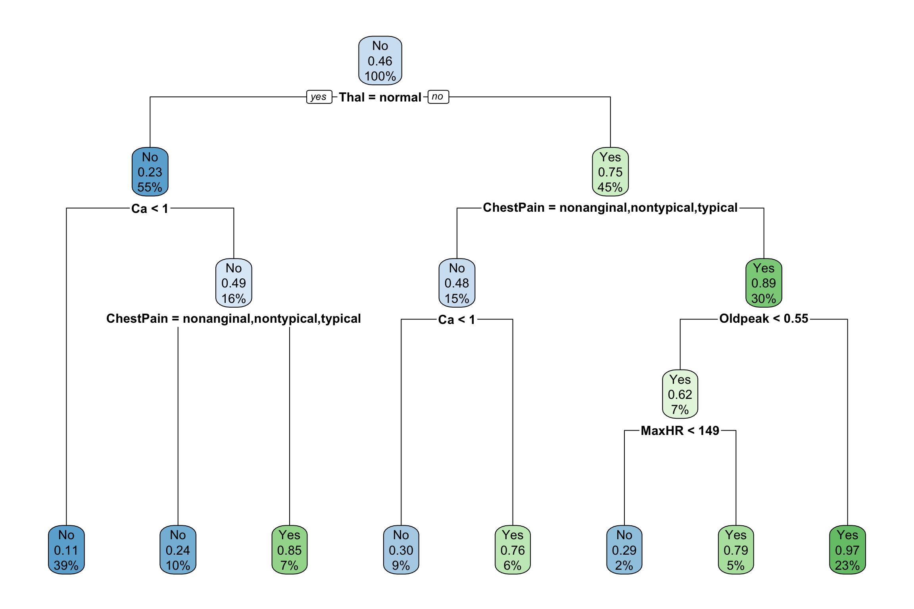

Topic 12 Decision Trees
12.1 Discussion
Why trees?
- Logistic regression is a parametric method.
- Also can only model binary responses
- If we don’t think that the model form below holds, might prefer a nonparametric method \[\text{log odds} = \beta_0 + \beta_1 x_1 + \cdots + \beta_p x_p\]
- Nonparametric methods
- KNN classification
- Tree-based methods
- Both KNN and tree-based methods can handle 3+ classes.
Gini index: choosing the “best” binary split
Suppose:
- response variable \(y\) has \(C\) different classes
- the tree has \(R\) total regions/nodes (leaves)
Measuring the purity of a single node
Let
\[p_{rc} = \text{proportion of cases in region/node $r$ that are of class $c$}\]
From these, we can compute the node/region’s Gini index/impurity:
\[G_r = \sum_{c=1}^C p_{rc} (1 - p_{rc})\]
- The smaller \(G_r\), the more pure region \(r\) is.
- \(G_r = 0\) if region \(r\) is perfectly pure (the cases in the node are all of 1 class).
Choosing the binary splits
The binary splits in a tree are chosen to minimize the average Gini index across all regions:
\[\sum_{r=1}^{R} G_r \cdot \frac{\text{# cases in region r}}{\text{total # cases}}\]
Example
13 cases; 3 classes (A, B, and C)

What is the average Gini index for the first split? For the second split? Which split is preferable?
12.2 Exercises
- Why use the Gini index instead of classification accuracy to build the tree? Consider a situation where we have 2 classes (class A and B) with 400 cases in each class. Consider two different splits:
Split 1:
Node 1 has 300 cases of class A and 100 of class B
Node 2 has 100 cases of class A and 300 of class B
Split 2:
Node 1 has 200 cases of class A and 400 of class B
Node 2 has 200 cases of class A and 0 of class B
a. To make a prediction for a node, we predict the majority class for all cases in that node. What is the overall accuracy over both Nodes 1 and 2 for Split 1? For Split 2?- What is the average Gini index for Split 1? For Split 2?
- Based on this example, why do you think the Gini index is preferred?
- Trees can also be used for regression!
- For classification, we use average Gini index as a measure of node (im)purity for tree building. Using residuals, come up with a measure of node (im)purity that can be used for tree building.
- Ok, let’s say that we apply that tree bulding procedure and end up with cases in the leaf nodes…how might we make a prediction in these leaves?
- Those greedy, greedy algorithms…
It was mentioned in the video that recursive binary splitting (RBS) is a greedy algorithm. What is another technique we’ve learned in class that is greedy? Describe how RBS parallels that other technique.
- Overfitting and the bias-variance tradeoff
Consider the two trees below built from a heart disease dataset. 
- Which tree is likely overfit to the data and why?
- Number of splits is not something that we can often directly control when we use software to build decision trees, but we can still think of it as a tuning parameter. How is number of splits related to bias and variance?
- Tree pruning
The idea behind tree pruning is to first grow a large tree. (e.g. Grow each region until the leaves have 5 or fewer cases.) Then we prune some branches–that is, we take out some splits. If there was a split, merge it back together.- The big tree above was actually pruned to make the smaller tree. Compare the trees and verify for a couple of branches that the changes result from merging nodes back together.
- This pruning is achieved with something called cost complexity pruning, and the idea is very related to LASSO! The cost complexity criterion for classification trees looks like: \[\text{average Gini index over leaves} + \lambda \times (\text{# leaves})\] Describe how this pruning criterion helps with overfitting by discussing the 2 extremes of \(\lambda\). How can we pick a good value for \(\lambda\)?